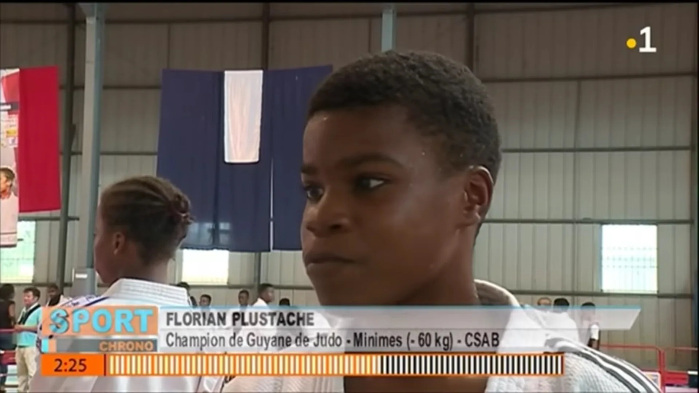

Championnat de Guyane 2018
Championnat 2018 · publié le 24 juin 2020
Cette publication du journal historique conserve un souvenir du championnat de Guyane 2018. Aucun classement nouveau n’est ajouté à cette reprise.

Journal de la Ligue de Judo de Guyane
Retour au journal